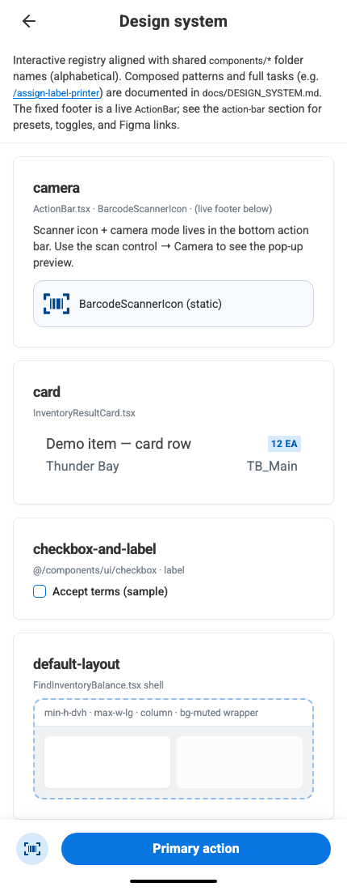
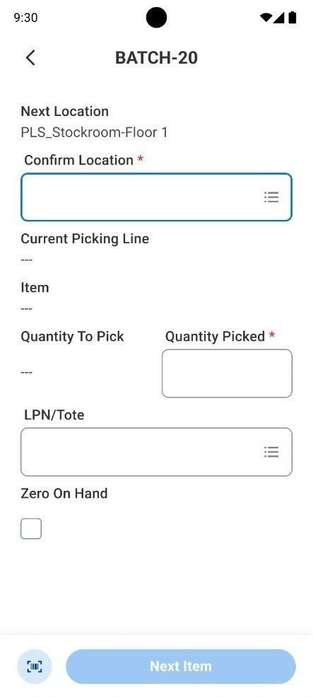
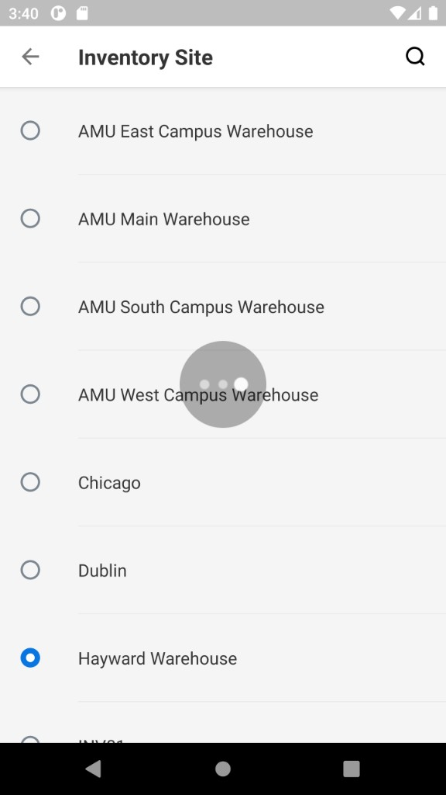
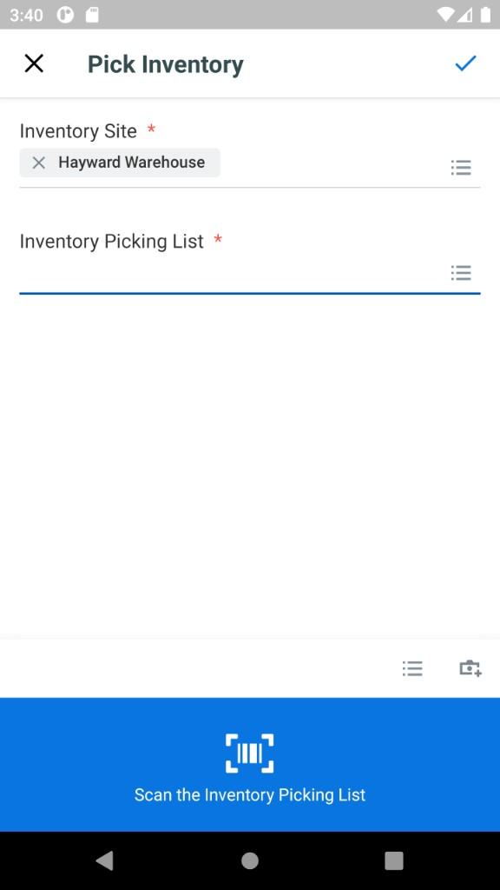
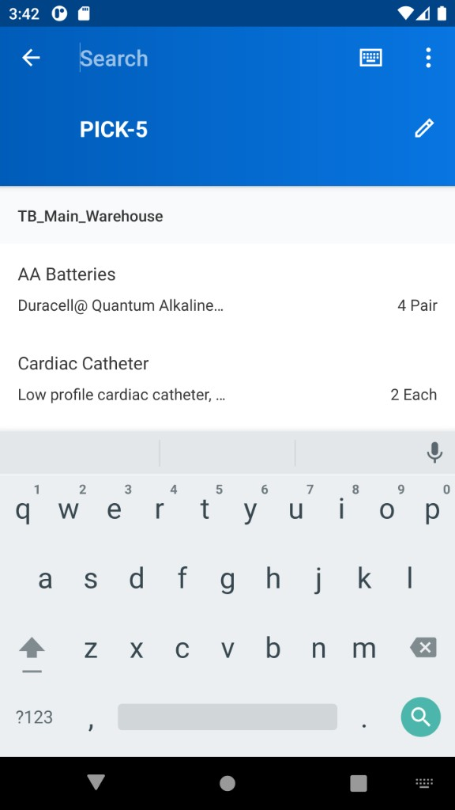
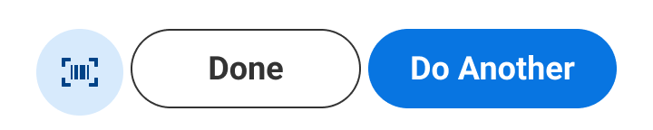
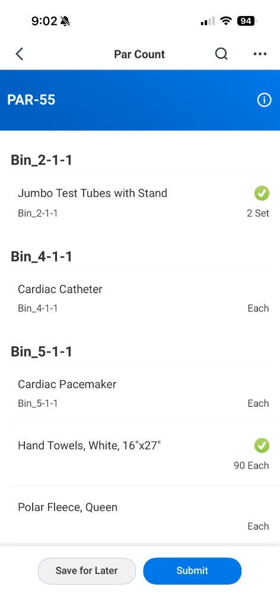
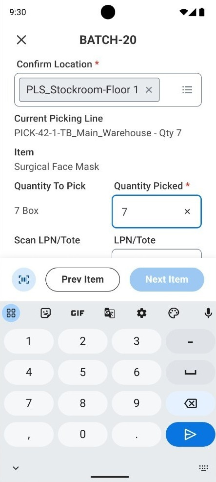
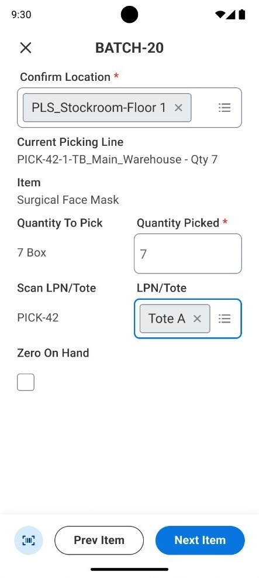
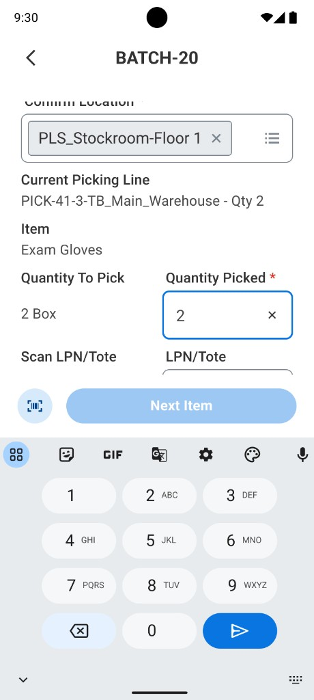

Workday · Mobile
Workday · Mobile
Inventory Stock Picking
One mobile library, many inventory tasks.

Warehouse workers spend full shifts in a phone app built like a consumer shopping app. The cost wasn't one bad screen — it was a platform mismatch. Every extra tap compounds across thousands of picks a day.
One mobile library, many inventory tasks — audit the full roadmap, fix shared components first, then compose them in batch pick before scaling across the rest.
We audited 21 inventory tasks first, then fixed the shared components that broke for pro users — action bar, list rows, scanner affordance — before rebuilding any single flow.
Those components composed in batch pick as the proof task, then rolled out across the inventory roadmap and other mobile teams. I owned design direction and shipped changes in code — 15 pull requests, 9 merged — alongside engineering.


The problem
A shopping-style app used by workers all shift, every day
If warehouse software isn't your world
Stock picking is the job of finding items in a warehouse and confirming quantities — often with a handheld scanner. This case study is about more than one task screen: I led a platform bet to extend Workday's design system for pro users, then proved it in batch pick and scaled it across an inventory roadmap.
The rest walks through the problem, the call to fix shared components first, the three component changes, how they composed in batch pick, and what shipped.
A phone app built for casual users, used by pros
Workers pick a site, open a list, confirm each item. Fine if you open the app once in a while — not fine when it's your whole shift. The UI underneath was shared with consumer-style mobile apps: airy rows, soft padding, one action per screen. The business impact is cumulative: small friction × high volume × every worker on the floor.




Exploration
We tried simplifying the flow first — it wasn't enough
One item per screen — cleaner, still too spacey
The first direction kept the existing mobile parts and simplified the steps: one pick at a time, scanner up top, big quantity keypad. Usability improved, but the screen itself stayed airy. With PM and engineering, we aligned on a harder call: stop polishing inside the wrong system and invest in shared building blocks the whole inventory roadmap could reuse.
Flow fix vs. platform extension
Two paths were on the table. Keep iterating on individual task flows — faster to demo, but each of 21 tasks would keep fighting the same density problem. Or extend the design system with a pro-user variant — slower upfront, but one investment that compounds. I recommended the second path: audit every task on the roadmap, fix the shared components first, then prove the library in batch pick before wider rollout.
Polish each flow
- Faster to demo in reviews
- Same airy components underneath
- 21 tasks, 21 density debates
- Teams fork footers and list rows
Extend the platform
- Audit 21 tasks — fix components first
- Shared action bar, lists, scanner affordance
- Same tokens — new proportions
- Compose in batch pick, then scale the roadmap
The system
Audit every task — fix shared components first, then compose them in batch pick
Twenty-one tasks, the same three component gaps
Before redesigning any flow, we mapped the full inventory roadmap — batch pick, par count, adjust inventory, find balance, and 17 others. Customer interviews and task walkthroughs surfaced the same breaks everywhere: action bars that truncated on ~360px scanners, list rows too airy for shift-long use, and a blue scanner panel that squeezed scrollable forms. The work wasn't task-by-task polish — it was fixing each pattern at the component level, then applying those components where the pain was highest.
Design decisions in the same codebase as engineering
Engineering adapted Workday's existing web components for the mobile web context. I worked in the same repo — opening pull requests for spacing, corner radius, and density so developers could focus on harder integration work. Figma MCP kept specs in sync with code, so the codebase stayed the source of truth.
Three components — before and after
Each change addresses the highest-impact gap we found across tasks — action bar, list density, scanner affordance. Fix the component once; every task on the roadmap inherits it.
Fluid spacing when labels truncate
On ~360px Zebra scanners, default action bar spacing cut off “Do Another” below ~410px — inside our mobile band, but with no rules for the narrow end. With engineering, clamp() on gap and button padding between existing sm→xxl tokens. One DefaultLayout patch; Storybook at 360px before merge.

Like-to-like Par Count, tighter where it counts
Re-platforming mobile tasks, customers asked to keep layouts familiar so teams spend less time re-training. We kept Par Count structure line-for-line — headers, rows, dual actions — and only tightened padding and gaps. More lines per screen; fin pro users prefer density over decorative whitespace on a shift-long tool.


Retiring the blue scanner panel
Adjust Inventory used a large blue block to show the scanner was active. It didn’t add function — it just squeezed the scrollable form. We treated removing it as a bigger change: multiple rounds of user testing and customer review. Customers aligned with the proposal — more room for critical fields; scanner state still clear from the action bar and scan menu.

In the product
Batch pick — where the updated components come together
Composing the library in batch pick
With the action bar, list rows, and scanner affordance updated in the library, we applied them to batch pick first — the task that stress-tests all three under real constraints. High line volume, constant scanning, dual actions in the footer: fluid spacing keeps labels intact at scanner width, denser rows show more picks per screen, and scanner state lives in the action bar instead of a panel that eats scroll height.
Two behaviors on top of the component layer: the barcode scanner advances the step on its own, and required fields auto-advance — type quantity, move to the tote field, scan, move on. It runs in a mobile web shell, so engineering could ship without a native rebuild. Once batch pick held up in review, the same components rolled out across the remaining inventory tasks and other mobile teams.



Outcomes
What shipped — and what I'd carry forward
What shipped
-
Pro-user mobile component library — action bar, list rows, and scanner patterns fixed at the component level, then shared across tasks
-
Batch pick as proof task — all three components composed in one high-stakes flow; scanner-driven steps and auto-advancing fields
-
Library extended to 21 inventory tasks — one shared catalog for design and engineering
-
Adopted by other mobile teams; 15 component pull requests submitted, 9 merged
-
Design-in-code operating model — Cursor for iteration, Figma MCP for spec sync, pull requests alongside engineering
What I'd carry forward
Fix components before flows
Auditing 21 tasks showed the same breaks in shared patterns — not 21 unique screen problems. Fix action bar, lists, and scanner chrome once; every task inherits the improvement.
Extend, don't fork
The pro-user layer stood on Workday's existing libraries. Same tokens and rules — new proportions. That kept adoption credible with platform owners and downstream teams.
Proof, then scale
Component fixes landed in the library first; batch pick validated them under real constraints before rollout to 21 tasks. Adoption is a design deliverable — not an afterthought once the Figma file looks done.
Own fidelity through the stack
Working in the codebase closed the gap between spec and shipped UI. Faster decisions with engineering, fewer regressions, and a library teams actually trust.